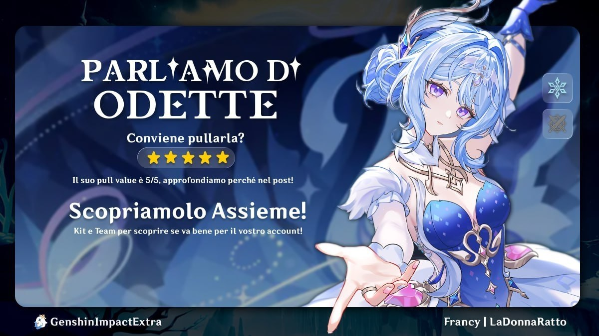

Ma quindi, com'e Odette?
Guida Rapida | 7.0 - Snezhnaya
Odette (5 stelle / Cryo / Spada) e una Sub-DPS e Supporto per le nuove reazioni Stellar-Conduct e Stellar-Swirl. Ecco tutto quello che c'e da sapere per sfruttarla al meglio.
Il Kit e i Buff
Abilita Elementale (Skill): Evoca il Solo Dance Double che infligge danni Cryo e Stellar-Conduct periodici. Riattivando la skill, Odette e il Double eseguono un attacco combinato.
Tripudio Elementale (Burst): Infligge danni Cryo ad area, resetta la durata del Double e aumenta i danni Stellar personali di Odette per 20 secondi.
Passive e Buff: Con almeno 2000 di ATK, potenzia il danno base delle reazioni del 14% e il suo danno Stellar fino al 30%.
Marvelous Splendor: All'attivazione della Skill ottiene 4 stack (ognuna da +15% danno Stellar). Quando Odette e fuori campo, trasferisce 1 stack al secondo al team, fornendo un buff complessivo fino al 60% di danno Stellar per tutta la squadra.
Armi Consigliate
- Whitelake Frostfeather (Signature): scelta migliore in assoluto, ma non strettamente necessaria.
- Alternative: qualsiasi stat-stick con Tasso/Danno Crit o la nuova spada craftabile di Snezhnaya (Emberwell). Freedom Sworn e situazionale: utile in Stellar-Conduct, poco utile in Stellar-Swirl. Inferiori alla Signature solo del 3%.
- Finale of the Deep (Craftabile Fontaine): opzione F2P eccellente, inferiore alla Signature solo del 6%, ma richiede un buon curatore in team.
Costellazioni
Odette e completa gia a C0. Se vuoi investire:
- C1: aggiunge istanze extra di danno e 2 stack aggiuntive alla passiva. Il buff team passa dal 60% al 90% (consumando 2 stack al secondo).
- C2: tra i pochi modi per ridurre le resistenze nemiche Cryo ed Electro/Anemo nei team Stellar. Ottimo stop-point per chi punta qualche costellazione.
Possibili team
I DPS migliori con cui associarla:
Sandrone, Cyno, Wriothesley, Yumemizuki Mizuki, Traveler Cryo e la futura Vesna.
- Supporti Stellar-Conduct: Yae Miko e la scelta top. Ottimo anche Alyosha, ma non con Wriothesley per evitare che le cure blocchino i suoi Attacchi Caricati.
- Supporti Stellar-Swirl: Sucrose e Faruzan, da accoppiare con Mizuki.
- Flex / Supporti generici: Qiqi (molto versatile) o Nicole (ottima per il buff all'Attacco).
Promemoria: niente healer se usi Wriothesley.
N.B.: al momento usare il Tripudio Elementale di Odette comporta una perdita di danni totali del team per via dei pochi danni dell'abilita e del tempo perso nelle animazioni.
Conclusione: Conviene pullarla?
Si, assolutamente. Odette e uno dei migliori investimenti a lungo termine per il meta di Snezhnaya. Rende molto gia a C0R0, ha danno alto e offre potenziamenti importanti alla squadra. Con diversi team Stellar in arrivo (Cryo, Electro, Anemo), trovera quasi sempre spazio in almeno una composizione.